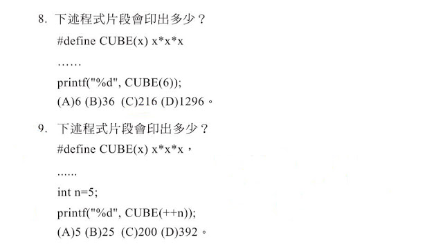
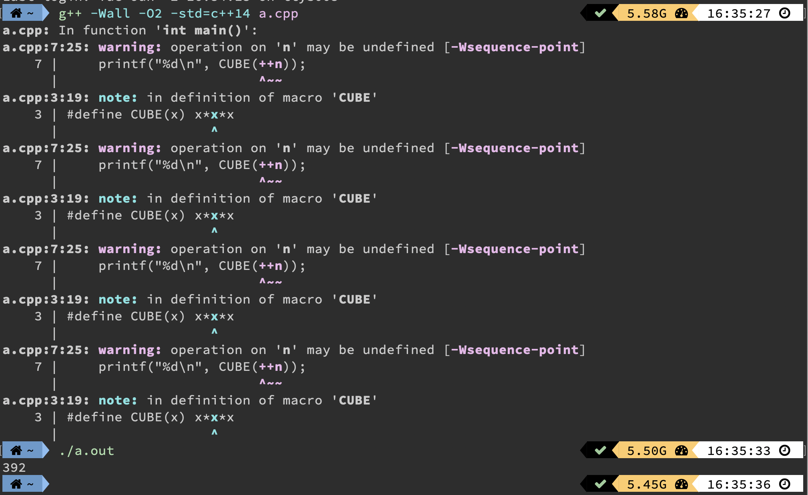
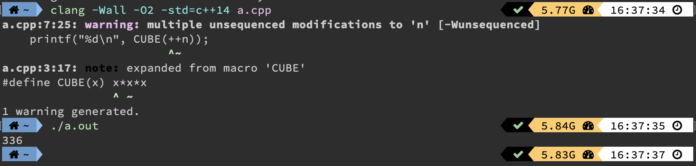

本篇文章我在以前的 Blogspot 有寫過，不過沒什麼點閱率 QAQ
現在好不容易這裡有一些觀看
再加上前陣子也有看到 Undefined Behavior 寫法被討論
我就把舊文章移植過來，順便把語病、說法做個修正
前幾天在看FB的文章時，看到了一篇貼文

第八題不會有太大的問題 6*6*6=216
第九題，答案是多少？
那篇貼文討論蠻熱烈的～（可是這讓我有點擔心……）
一般人第一個直覺是把++n算完後代入x，就會變成6*6*6=216，可是沒有在選項內……？
那就來執行一次看看吧
統一以這份 Code 執行
#include<cstdio>
using namespace std;
#define CUBE(x) x*x*x
int main()
{
int n = 5;
printf("%d\n", CUBE(++n));
return 0;
}用兩個較主流的編譯器，GNU G++ 跟 Clang（MSVC++ 表示：…）
GNU G++
編譯參數：g++ -Wall -O2 -std=c++14 a.cpp

輸出結果 392
那第九題答案就是 (D)，真相大白
.
.
.
.
.
.
答案真的那麼簡單？來看看 Clang 結果吧！
Clang
編譯參數：clang -Wall -O2 -std=c++14 a.cpp

等一下！竟然是 336？
這個就是所謂的 UB（Undefined Behavior）未定義行為
照理說，同個語言，不同編譯器，執行結果一定要一樣
這個跟運算的優先順序有點關係，每個運算子在 C/C++ 的優先順序
這有點像是遊戲規則，大規則方向有訂好
但是有些規則並沒有規定誰先誰後
自己編譯器就自己規定，反正只要照著大方向就好
像是 GNU G++ 的結果：
第一個數字 ++N 確實變成 $6$
乘法優先運算子低
把 $N$ 排入等待運算
第二個數字又把 $N$ 加上 $1$
第一個數字被連帶影響
第一個跟第二個數字相乘就變成 $7 \times 7 = 49$
把 $49$ 排入等待運算
第三個數字又把 $N$ 加上 $1$
$N$ 變成 $8$
$49 \times 8 = 392$
以上為對 GNU G++ 的個人見解
Clang 結果：
第一個數字 ++N 確實變成 $6$
乘法優先運算子低
把 $6$ 排入等待運算
第二個數字又把 $N$ 加上 $1$
第一個跟第二個數字相乘就變成 $6 \times 7 = 42$
把 $42$ 排入等待運算
第三個數字又把 $N$ 加上 $1$
$N$ 變成 $8$
$42 \times 8 = 336$
以上為對 Clang 的個人見解
以上結果其實沒有違反「運算子的優先順序」
但！這是未定義行為，真的不需要對他細節作法作討論
程式編譯經過優化後，也有可能自動幫你修改過程
未定義行為結果就可能會因此不同
結論
聽網路上說，大學教授其實出蠻多這種題目的（還好我的科系沒有考這種東西），討論這種題目基本上沒有什麼意義，錯誤的定義上討論出的結果，也只會是錯誤的。
不過我也有去找教授討論過，他上課也說過，同一個運算式，不要使用「遞增遞減運算子（Ex.i++、++i、i–、–i）」超過兩個以上，不然會發生一些不可預期的錯誤。
UB（Undefined Behavior）的例子還有很多，發生的情況不一定是執行結果不一樣
希望不要再出這種 Code 殘害學生，也不需要去討論這種東西
只要告訴他：「這是 UB（Undefined Behavior）未定義行為，不需要去多做任何討論。」